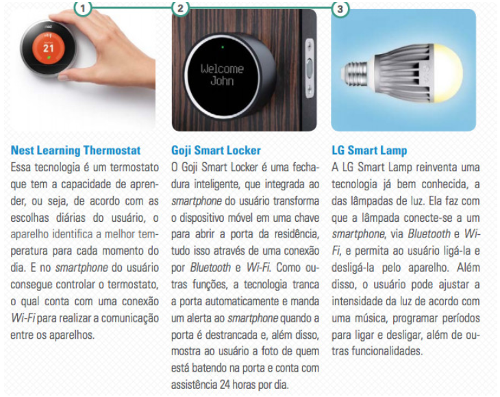

O conceito de internet das coisas (Internet of things, em inglês) provém à conexão de todos os dispositivos com a internet, o termo "coisas" se refere aos dispositivos inteligentes e interligados de qualquer tipo e propósito, que podem ser localizados em qualquer lugar e interagir uns com os outros [1]. Desde sua concepção, internet das coisas chegou a ser considerado a próxima onda da indústria da informação depois do computador, internet e comunicação celular [2].
Internet das coisas proporciona um mundo para criar ambientes altamente ágeis e dinâmicos que tornam sistemas de varios contextos mais inteligentes, ou seja, trazendo maiores benefícios aos seus usuários sem a necessidade de interagir diretamente com as coisas..
Os dispositivos de internet das coisas são inteligentes e podem fazer decisões relacionadas a um determinado contexto, graças ao fato de que os mesmos podem gerar informações sobre si mesmos e também podem acessar informações que foram agregadas por outros dispositivos que estão na rede [3].
O número de dispositivos inteligentes de IoT conectados à internet ultrapassou o número de seres humanos no planeta em 2011, e até o ano de 2020, estes dipositivos deverão totalizar até cinquenta bilhões. [3]
Para cada PC ou telefone conectado à Internet, haverá entre cinco a dez outros tipos de dispositivos vendidos com conectividade nativa na Internet.
Nichos de negócios
Com este grande potencial de crescimento de dispositivos inteligentes de IoT, abre espaço para os pequenos negócios inovarem e conquistarem o mercado criando novos hardwares, softwares, infraestrutura ou até mesmo fazendo serviços de manutenção [4].
Em meu trabalho de conclusão de curso da pós graduação escolhi o tema de internet das coisas para elaboração de um desses nichos, onde foi feito uma arquitetura com o foco na camada de comunicação, esta arquitetura foi desenvolvida para um middleware de gerenciamento de dispositivos inteligentes de IoT. Esta camada teve como objetivo descobrir os dispositivos de IoT ingressados em uma rede, integra-se com os mesmo e disponibilizar seus dados gerados.
Alguns projetos interessantes:
Varias tecnologias já foram desenvolvidas no conceito de IoT, basta procurar um pouco no google e encontrará geladeiras inteligentes que alerta falta de mantimentos, carros que dirigem sozinho de acordo com o trajeto do Waze, casas smarts e etc.
Abaixo consta alguns exemplos de tecnologias desenvolvidas com o conceito de IoT [4]:
